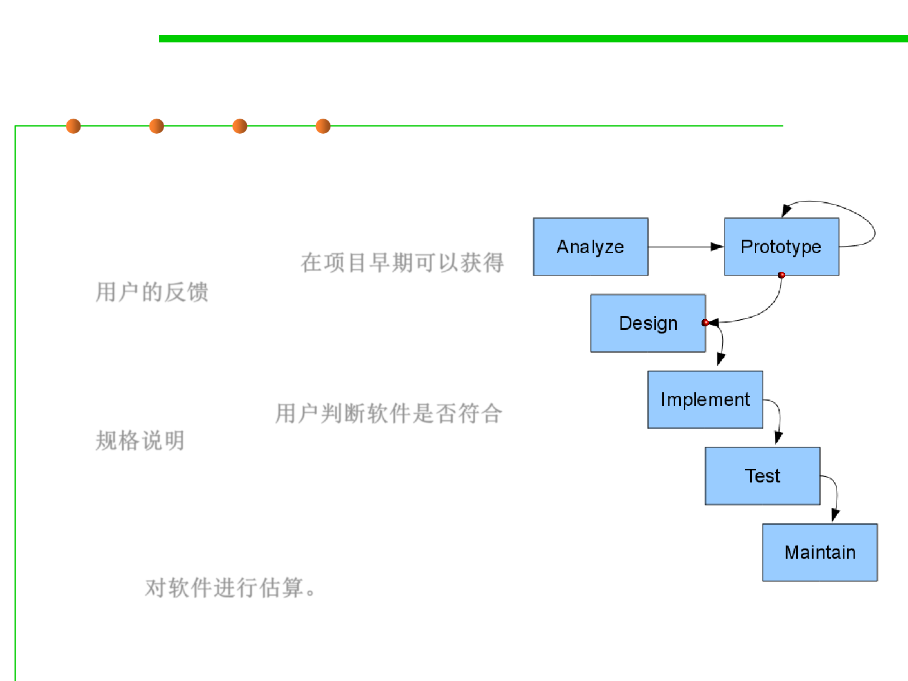

2.1 Software Lifecycle and Configuration Management
Prototyping (iterative)
▪ Benefits:
– The software designer and implementer
can get valuable feedback from the users
early in the project. 在项目早期可以获得
用户的反馈
– The client can compare if the software
made matches the software specification,
according to which the software
program is built. 用户判断软件是否符合
规格说明
– It also allows the software engineer some
insight into the accuracy of initial project
estimates and whether the deadlines and
milestones proposed can be successfully
met. 对软件进行估算。